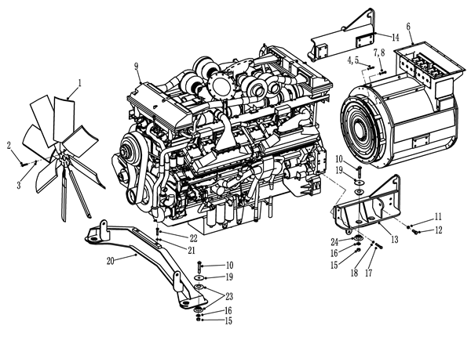

发动机与发电机安装. · ENGINE AND ALTERNATOR MOUNTING
Силовая система
Спецификация
1
Вентилятор
7
Болт
13
Левый задний монтажный кронштейн
19
Плоская прокладка
2
Болт
8
Пружинная подушка
14
Правый задний монтажный кронштейн
20
Передний монтажный кронштейн
3
Пружинная подушка
9
Двигатель
15
Гайка
21
Пружинная подушка
4
Болт
10
Болт
16
Шайба
22
Болт
5
Пружинная подушка
11
Пружинная подушка
17
Болт
23
Амортизационная прокладка
6
Генератор
12
Болт
18
Пружинная подушка
24
Амортизационная прокладка
Рис. 1. Установка двигателя и генератора
Двигатель
Общие сведения (рис. 1)
В состав модуля двигателя входят следующие части:
1. дизельный двигатель;
2. основной тяговый генератор переменного тока;
3. радиатор.
Модуль двигателя устанавливается в передней части основной рамы. Подушка между основной рамой и опорой двигателя играет роль в поглощении вибрации.
Управление
Модуль двигателя обеспечивает разными силовыми энергиями. Двигатель обеспечивает главному тяговому генератора переменного тока силовой энергией, генератор переменного тока обеспечивает электромотор-колесам силовой энергией. Модуль двигателя также приводит гидронасос, генератор для зарядки АКБ и другие вспомогательные устройства карьерного самосвала в действие.
Уход и техническое обслуживание
Периодическое техническое обслуживание включает в себя следующие виды работ:
1. Очистить модуль двигателя от грязи и масляных пятен.
2. Проверить состояние ряда компонентов, в том числе проверить наличие/отсутствие утечек и других повреждений.
3. Убедитесь в надежности креплении всех монтажных принадлежностей.
4. Проверить состояние резиновой прокладки.
5. Определите работоспособность и уровень мощности силовой системы.
Демонтаж (см. рис. 1)
Снятие модуля двигателя целиком из карьерного самосвала производится в следующем порядке:
1. Остановить карьерный самосвал в безопасном месте. Подложить клинья под колеса карьерного самосвала, кроме использования фрикционной системы торможения, еще нужно кроме использования фрикционной системы торможения, еще нужно надежно удерживать его в неподвижном состоянии другим подходящим методом.
2. Сбросить давление в гидравлической системе, топливной системе и системе охлаждения.
3. Снять систему охлаждения в сборе в соответствии с порядком, указанным в части 040 - «Силовая система».
4. Снять капот и защитную решетку в сборе в соответствии с порядком, указанным в части 020 - «Конструктивные элементы».
5. Отсоединить все гидравлические трубопроводы между двигателем и другими компонентами.
6. Отсоединить основной кабель от генератора переменного тока.
7. Снять трубопровод вентилятора в соответствии с порядком, указанном в части 040 - «Силовая система».
8. Снять впускную трубу и выхлопную трубу из двигателя, закрыть все концы во избежание попадания загрязняющих веществ.
9. Отсоедините все остальные проводы и шланги от модуля.
10. Отсоединить приводной вал между генератором переменного тока и гидронасосом в соответствии с порядком, указанным в части 050 - «Гидравлическая система».
11. Снятие модуля из карьерного самосвала производится в следующем порядке:
ПРИМЕЧАНИЕ: Рекомендуется использовать специальное устройство для подъема двигателя (для приобретения можно обратиться в ОАО «NHL»). При снятии и установке рекомендуется использовать ручную таль, чтобы регулировать наклон двигатель вперед-назад.
a. При использовании крана или другого оборудования, обладающего достаточной грузоподъемностью, установить приспособление для подъема модуля двигателя над модулем двигателя, затем зацепить трос за кронштейн генератор, присоединить передний грузовой крюк к подходящей части двигателя или переднему кронштейну двигателя.
b. Установить ручную таль с умеренной грузоподъемностью между передним подъемным крюком и основным подъемным ушком.
c. Снять болты крепления модуля двигателя и рамы.
d. Осторожно поднимать и снять модуль двигателя. Наклонить модуль с помощью ручной тали.
12. Разместить или зафиксировать модуль двигателя на подходящем стенде, чтобы обеспечить безопасность последующей работы или размещения.
Разборка
Снятие генератора переменного тока из двигателя производится в следующем порядке:
1. Присоединить подходящее подъемное приспособление к отверстию для подъема генератора, поддерживать цепь в натянутом состоянии путем функционирования подъемного приспособления.
ПРИМЕЧАНИЕ: Если требуется повторная установка тех же самых двигателя и генератора, то в целях облегчения повторной установки нужно нанести метки на картер маховика и маховик.
2. Снять кронштейн крепления двигателя и генератора.
3. Снимите защитный кожух снаружи статора генератора, выньте болты и шайбы, используемые для соединения маховика двигателя и статора генератора, извлеките регулировочные прокладки между ними.
4. Снять соединительные болты с шайбами статора генератора переменного тока и картер маховика двигателя, извлечь промежуточные регулировочные прокладки.
5. Переместить генератор переменного тока назад для облегчения снятия, затем поднимать двигатель и разместить его в другое место.
ПРИМЕЧАНИЕ: Следует хранить снятые регулировочные прокладки вместе с генератором переменного тока, перед установкой рекомендуется снова проводить сопряжение двигателя и генератора в соответствии с требованиями и указанным порядком, даже если это одни и те же двигатель и генератор, чтобы обеспечить правильный зазор.
Осмотр и ремонт
Для получения более подробной информации об устранении неисправностей обратитесь к инструкции завода-изготовителя двигателей Cummins.
Сборка
Установка генератора на двигатель производится в следующем порядке:
ПРИМЕЧАНИЕ: Для облегчения сборки необходимы следующие специальные приспособления и инструменты:
1. индикаторный микрометр, оснащенный монтажным комплектом;
2. захватное приспособление, позволяющее перевернуть индикаторный микрометр и проводить измерения на маховике;
ПРЕДУПРЕЖДЕНИЕ
Перед началом работы модуля двигателя убедитесь в надежном креплении двигателя. Ненадлежащее расположение двигателя может привести к травмам или повреждению оборудования.3. инструмент и приспособление для прокрутки двигателя, позволяющие коленчатому валу двигателя медленно вращаться;
4. специальные калибромеры с возможностью получения измеренных данных (изготовленные ОАО «NHL»), нужны два комплекта калибромеров, один из них для измерения двигателя, другой - для измерения генератора переменного тока;
5. один индикаторный микрометр с диапазоном измерений 2-3 дюйма (50-70 мм), используемый вместе с калибромером для измерения данных;
При сборке рекомендуется сохранение таблицы с важными измеренными данными для облегчения последующего внесения изменений, как указано в таблице 1.
1. Надеть торцевую головку для прокрутки двигателя на болт для прокрутки с левой стороны двигателя, снять стопорное кольцо.
2. Очистить все защитные покрытие маховика в сборе и картера маховика, удалить пыль и т.д. Полировать монтажные поверхности или царапины, заусенцы, вмятины и другие проблемные места на картере маховика, сделать их гладкими.
3. Измерение осевого зазора коленчатого вала двигателя производится в следующем порядке:
a. Снять крышку смотрового окошка коленчатого вала сзади с левой стороны блока цилиндров двигателя.
b. Ослабить все ремни двигателя.
c. Установить индикаторный микрометр на маховик или амортизатор коленчатого вала, чтобы измерить общей величины смещения коленчатого вала вперед-назад.
d. Сдвинуть коленчатый вал двигателя вперед, если смотреть сзади, то он вращается по часовой стрелке на целый оборот, чтобы обеспечить расположение коленчатого вала в крайне заднем положении.
ВАЖНОЕ ПРИМЕЧАНИЕ: Нельзя сдвинуть коленчатый вал начиная с амортизатора коленчатого вала, можно сдвинуть его только через отверстие в крышке смотрового окошка, при сдвижении будьте осторожны, запрещается трогать обработанные поверхности, нельзя повредить коленчатый вал или другие детали двигателя.
e. В этот момент установить индикаторный микрометр на нуль.
f. Сдвинуть коленчатый вал двигателя назад, если смотреть сзади, то он вращается против часовой стрелки на целый оборот, чтобы обеспечить расположение коленчатого вала в крайне переднем положении.
g. В этот момент индикаторный микрометр показывает измеренное значение осевого зазора коленчатого вала двигателя, записать измеренное значение в таблице 1.
ПРИМЕЧАНИЕ: Для получения правильных показаний индикаторного микрометра следует удерживать коленчатый вал от осевого смещения путем поворота коленчатого вала на один оборот. Перемещение коленчатого вала вперед осуществляется поворотом по часовой стрелке. Перемещение коленчатого вала назад осуществляется поворотом против часовой стрелки, все направления поворота определены со стороны маховика.
h. Измерить зазор согласно приведенным в таблице 2 допустимым осевым зазорам коленчатого вала, если измеренный зазор находится в допустимом пределе, то перейти к следующему шагу, если он не находится в допустимом пределе, то выявить причины и устранить проблему.
i. Измерить расстояние между 4 точками, равномерно распределенными по окружности монтажной поверхности картера маховика и монтажной поверхности маховика, записывать разные измеренные индикаторным микрометром значения в таблице 1, рассчитать и записывать среднее, которое используется в качестве переднего положения CFP.
I. Данные измерений двигателя
A. Осевой зазор коленчатого вала________дюйма (мм)
B. Радиальное биение маховика___________дюйма (мм).
C. Радиальное биение картера маховика___________дюйма (мм)
D. Торцевое биение маховика___________дюйма (мм)
E. Торцевое биение картера маховика___________дюйма (мм)II. Требования к размерам прокладок
A. Расстояние между маховиком двигателя и монтажной поверхностью картера маховика (коленчатый вал находится в крайне переднем положении) 1.____дюйма (мм)
2.____
3.____
4.____
Общая величина: _____дюйма (мм)
Среднее значение измеряемой величины двигателя [А] (разделить вышеуказанную общую величину на 4, к ней прибавить 1/2 осевого зазора коленчатого вала) A =__дюйма (мм)
B. Данные измерений генератора
1. Ротор генератора находится в задней части (заднего конца) 1.____дюйма (мм)
2.____
3.____
4.____
2. Ротор генератора находится в задней части (переднего конца) 1.____дюйма (мм)
2.____
3.____
4.____
Общая величина: _____дюйма (мм)
Среднее значение измеряемой величины генератора [B] (разделить вышеуказанную общую величину на 8) B =_______дюйма (мм).III. Требования к прокладкам
A. Если размер «В» больше, чем «А», то необходимо отрегулировать зазор между картером маховика двигателя и статором генератора.
B. Если размер «А» больше, чем «В», то необходимо отрегулировать зазор между маховиком двигателя и ротором генератора.
C. Толщина прокладки должна быть равна разнице между двумя размерами, максимально допустимое отклонение равно 0,005 дюйма (1,3 мм)
Толщина прокладки_________дюйма (мм)
Место установки_________IV. Окончательное измерение
A. Осевой зазор коленчатого вала двигателя_________ дюйма (мм)
B. Осевой зазор якоря генератора_________ дюйма (мм)Табл. 1. Данные по установке прокладок двигателя/генератора
Допустимый осевой зазор коленчатого валаМодель двигателяМинимальный зазор (нового двигателя)Максимальный зазор (нового двигателя)Размер зазора не должен превышать следующее значение.KT/KTA 380,005 дюйма (0,13 мм)0,015 дюйма (0,38 мм)0,020 дюйма (0,50 мм)QSK450,005 дюйма (0,13 мм)0,015 дюйма (0,38 мм)0,020 дюйма (0,50 мм)KTA/KTTA500,005 дюйма (0,13 мм)0,015 дюйма (0,38 мм)0,020 дюйма (0,50 мм)QSK60/QSK780,005 дюйма (0,13 мм)0,015 дюйма (0,38 мм)0,020 дюйма (0,50 мм)Табл. 2. Допустимый осевой зазор коленчатого вала
4. Очистить все защитные покрытия маховика в сборе и картера маховика в сборе, удалить грязь и т.д. Полировать монтажные поверхности или царапины, заусенцы, вмятины и другие проблемные места на направляющей шпильке, сделать их гладкими.
5. Измерение радиального биения маховика двигателя производится в следующем порядке:
a. Зафиксировать индикаторный микрометр на обработанной поверхности картера маховика, стрелка должна направляться к внутренней поверхности прорези маховика, установить индикаторный микрометр на нуль.
b. Медленно прокрутить двигатель на 2 оборота с помощью приспособления для прокрутки двигателя, убедиться в возврате индикаторного микрометра в нулевое положение.
ПРИМЕЧАНИЕ: Когда коленчатый вал вращается на целый оборот, индикаторный микрометр должен возвращаться в нулевое положение. Если он не возвращается в нулевое положение, то это свидетельствует о смещении коленчатого вала или смещении индикаторного микрометра. Если индикаторный микрометр не возвращается в нулевое положение, то измеренный зазор является неправильным. При необходимости повторять данную процедуру.
c. Разница между максимальным и минимальным значениями, возникающая в процессе прокрутки двигателя - это радиальное биение маховика, записывать данные и сравнить с приведенными в таблице 3 допустимыми зазорами, если измеренное значение находится в допустимом пределе, то перейти к следующему шагу. Если оно не находится в допустимом пределе, то выявить причины и устранить проблему.
Максимальное радиальное биение маховика, мм (дюйма)Маховик №00,13(0,005)/0,08(0,003)Маховик №000,13(0,005)SAE J6200,13(0,005)Табл. 3. Максимальное радиальное биение маховика
6. Измерение радиального биения картера маховика производится в следующем порядке:
a. Зафиксировать индикаторный микрометр на обработанной поверхности картера маховика, стрелка должна направляться к внутренней поверхности прорези маховика, установить индикаторный микрометр на нуль
b. Медленно прокрутить двигатель на 2 оборота с помощью приспособления для прокрутки двигателя, убедиться в возврате индикаторного микрометра в нулевое положение.
c. Разница между максимальным и минимальным значениями, возникающая в процессе прокрутки двигателя - это радиальное биение картера маховика, записывать данные и сравнить с приведенными в таблице 4 допустимыми значениями, если измеренное значение находится в допустимом пределе, то перейти к следующему шагу. Если оно не находится в допустимом пределе, то выявить причины и устранить проблему.
7. Измерение торцевого биения маховика производится в следующем порядке:
a. Зафиксировать индикаторный микрометр на обработанной поверхности картера маховика, стрелка должна направляться к торцевой поверхности маховика, установить индикаторный микрометр на нуль.
b. Медленно прокрутить двигатель на 2 оборота с помощью приспособления для прокрутки двигателя, убедиться в возврате индикаторного микрометра в нулевое положение.
Максимальное радиальное биение картера маховика, мм (дюйма)Маховик №0 Cummins0,25(0,010)Маховик №00 Cummins0,30(0,012)SAE J6170,48(0,019)Табл. 4. Максимальное радиальное биение картера маховика
c. Разница между максимальным и минимальным значениями, возникающая в процессе прокрутки двигателя - это торцевое биение маховика, записывать данные и сравнить с приведенными в таблице 5 допустимыми значениями, если измеренное значение находится в допустимом пределе, то перейти к следующему шагу. Если оно не находится в допустимом пределе, то выявить причины и устранить проблему.
Максимальное торцевое биение маховика, дюйма (мм)Маховик №00,001 × радиус контрольной точки (0,25) Маховик №000,001 × радиус контрольной точки (0,30)SAE J6200,0005 × радиус контрольной точкиГибкий диск 0#0,035(0,89)Гибкий диск 00#0,040(1)Табл. 5. Максимальное торцевое биение маховика
8. Измерение осевого биения картера маховика производится в следующем порядке:
a. Зафиксировать индикаторный микрометр на обработанной поверхности на маховика, стрелка должна направляться к торцевой поверхности маховика, установить индикаторный микрометр на нуль.
b. Медленно прокрутить двигатель на 2 оборота с помощью приспособления для прокрутки двигателя, убедиться в возврате индикаторного микрометра в нулевое положение.
c. Разница между максимальным и минимальным значениями, возникающая в процессе прокрутки двигателя - это торцевое биение картера маховика, записывать данные и сравнить с приведенными в таблице 6 допустимыми значениями, если измеренное значение находится в допустимом пределе, то перейти к следующему шагу. Если оно не находится в допустимом пределе, то выявить причины и устранить проблему.
Максимальное торцевое биение картера маховика, дюйма (мм)Картер маховика №0 Cummins0,25（0,010）Картер маховика №00 Cummins0,30（0,012）SAE J6170,48（0,019）Табл. 6. Максимальное биение торцевой поверхностей картера маховика
ПРИМЕЧАНИЕ: После поворота на один оборот стрелка индикаторного микрометра должна возвращаться в нулевое положение, в противном случае измеренное значение является неверным. При необходимости повторять данную процедуру.
9. Измерение значения «В» якоря генератора производится в следующем порядке:
a. Очистить все защитные покрытия монтажной поверхности ротора и картера статора, удалить грязь и т.д., полировать монтажную поверхности ротора или царапины, заусенцы, вмятины и другие проблемные места на картере статора, сделать их гладкими.
b. Поднимать генератор с помощью подходящего подъемного приспособления и разместить его в вертикальном положении, подложить под него подставку умеренной высоты.
ПРИМЕЧАНИЕ: Следует использовать специальную стойку/захватное приспособление для генератора, позволяющее переместить генератор по различной горизонтальной плоскости, чтобы сделать измерение толщины прокладки гораздо более точным.
ВНИМАНИЕ
Высота подъема генератора должна быть достаточна, чтобы обеспечить плавность подъема, избежать соприкосновения шкива и клемм и соответствующих элементов с поверхностью земли, защитить вентилятор в сборе (при наличии) на том же валу.c. Сдвинуть ротор генератора вперед, чтобы обеспечить расположение ротора в крайне переднем положении. Измерить и записывать расстояние между 4 точками (в положении 12, 3, 6, 9 часов) между монтажной поверхностью ротора генератора и монтажной поверхностью картера статора (с помощью специального калибромера и индикаторного микрометра для двигателя).
ВНИМАНИЕ
Будьте осторожны, избегайте попадания прокладки в якорь, рекомендуется сделать конец прокладки крылообразным/или установить ее должным образом с помощью крыловидной пластинки. Нельзя поднять генератор от держателя, иначе это может привести к повреждению подшипника. Следует убедиться в нахождении якоря в крайне верхнем положении (или в направлении вперед), правильное измерение осевого зазора якоря играет важную роль.d. Сдвинуть ротор генератора назад, чтобы обеспечить расположение ротора в крайне заднем положении. Измерить и записывать соответствующие размеры согласно шагу 9c.
e. Прибавить 4 измеренных значения, полученное на шаге 9c к измеренным значениям, полученным на шаге 9d, рассчитать среднее значение 8 величин. Данное значение называется значением «В» и равно среднему значению осевого зазора якоря.
10. Требуемая толщина прокладки равна разнице между размерами «А» и «В».
a. Если размер «В» больше, чем «А», то установить прокладку между картером маховика двигателя и картером статора генератора.
b. Если размер «А» больше, чем «В», то установить прокладку между маховиком двигателя и ротором генератора.
ВНИМАНИЕ
Следует измерить толщину регулировочной прокладки, чтобы убедиться в правильной толщине. При установке регулировочной прокладки с помощью рулетки, не оставляйте ее на посадочное месте в процессе окончательной сборки. Последствия неправильной установки прокладки могут быть гораздо серьезнее, чем отсутствие прокладки, поскольку существует вероятность возникновения неисправностей коленчатого вала и генератора при приложении предварительной нагрузки к валу.ПРИМЕЧАНИЕ: Малый набор регулировочных прокладок должен быть состоит из 1 или 2 прокладок, большой набор регулировочных прокладок должен состоять из 4 прокладок.
11. Сборка двигателя и генератора производится в следующем порядке:
a. Сдвинуть генератор переменного тока как можно ближе к двигателю, если существует необходимость установки регулировочных прокладок, то надевать их на установочные болты для регулировки зазоров, сначала по очереди установить данные установочные болты, затем симметрично затянуть их заданным моментом.
b. По очереди установить установочные болты других частей двигателя и генератора, не требующих регулировки зазоров, затем симметрично затянуть их заданным моментом.
c. Установить болты левого и правого задних кронштейнов крепления двигателя и генератора, затянуть их заданным моментом.
d. Установить наружную защитную сетку генератора надлежащим образом.
ВАЖНОЕ ПРИМЕЧАНИЕ: Допускается использовать только болты класса прочности SAE8 или болты подобного класса прочности. Использование болтов низкого класса прочности вместо их может привести к повреждению оборудования.
e. Держать задний конец генератора, чтобы усилить подпирание генератора, снять подъемное приспособление.
12. Осуществлять окончательную проверку, чтобы определить точность зазоров в разных местах.
a. Установить индикаторный микрометр, измерить смещение амортизатора и вывода якоря.
b. Повернуть коленчатый вал по часовой стрелке, в то же время сдвинуть его вперед.
c. Установить два индикаторных микрометра на нуль (отпустить лом), нанести метки смещения амортизатора и шкива.
d. Повернуть коленчатый вал на целый оборот против часовой стрелки. В то же время постараться сдвинуть его назад.
e. Считывать показания двух индикаторных микрометров (отпустить лом).
ПРИМЕЧАНИЕ: Смещение коленчатого вала должно совпадать с исходным значением, вал якоря также нужно сдвинуть, но не требуется совпадение его смещения со смещением коленчатого вала.
f. Заново установить два индикаторных микрометра на нуль.
g. Повернуть коленчатый вал на целый оборот по часовой стрелке, в то же время сдвинуть его вперед.
h. Считывать показания двух индикаторных микрометров (отпустить лом).
ПРИМЕЧАНИЕ: Смещение коленчатого вала должно совпадать с исходным значением, вал якоря также нужно сдвинуть, но не требуется совпадение его смещения со смещением коленчатого вала. Это свидетельствует об отсутствии осевой предварительной нагрузки и правильной установке регулировочных прокладок на сборочную единицу.
13. Установить крышку смотрового окошка коленчатого вала.
14. Если компонент был снят, то установить кронштейн/монтажное гнездо.
Установка (см. рис. 1)
Установка модуля двигателя производится в следующем порядке:
1. Использовать мостовой кран достаточной грузоподъемности или другое подходящее подъемное оборудование, разместить подъемное устройство над модулем двигателя, зацепить подъемный канал за генератор, переднее подъемное ушко направляющей модуля двигателя.
2. Установить ручную таль с достаточной грузоподъемностью между передней балкой и основным подъемным крюком.
3. При необходимости наклонить модуль двигателя с помощью ручной тали, осторожно установить модуль обратно на основную раму.
ВАЖНОЕ ПРИМЕЧАНИЕ: При установке будьте особенно осторожны, чтобы избежать повреждениям разных проводов и трубопроводов, в случае обнаружения любых повреждений, следует немедленно проводить осмотр и восстановление.
4. Установите все резиновые буферы и болты, затяните гайки в соответствии с требованиями. Момент затяжки составляет 922 Н.м.
ВНИМАНИЕ
При монтаже трубопроводов следует обеспечить надлежащую герметичность ряда разных соединений и проходимость трубопроводов, убедиться в отсутствии повреждений. Прорыв и засорение может вызвать снижение потока охлажденного воздуха и привести к перегреву узлов и деталей.5. Установите воздуховоды охлаждения на генератор и картер моста в соответствии с порядком, указанным в главе 040 «Силовая система».
6. Присоединить приводной вал между генератором и гидронасосом в соответствии с порядком, указанном в части 050 - «Гидравлическая система».
7. Присоединить впускную трубу и выхлопную трубу двигателя. Проверить ряд компонентов и соединений на наличие повреждений или утечек. Незначительная утечка тоже может вызвать попадание загрязняющих веществ и привести к повреждению двигателя.
8. Присоединить все проводы, топливопроводы и гидравлические трубопроводы.
9. Установить модуль системы охлаждения в соответствии с порядком, указанном в части 040 - «Силовая система», включая ранее снятые привод вентилятора, все шланги и провода.
10. Установить защитный кожух и защитную решетку в сборе и соответствующие элементы в соответствии с порядком, указанным в части 020 - «Конструктивные элементы».
11. Убедитесь в правильном давлении и уровне жидкости. Перед вводом карьерного самосвала в эксплуатацию проверьте двигатель на наличие утечки, определите работоспособность электрической системы и уровень мощности.
Силовая система – двигатель
040-0000
Силовая система – двигатель
040-0000
8
5
Силовая система – двигатель
040-0000
10
9
10
Иллюстрации
